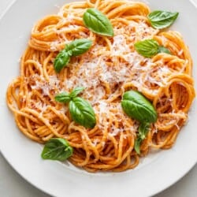

Go back to all recipes
Pasta Pomodoro

Description
Italians pride themselves on their emphatically regional cuisine. But if a national dish did exist, it would be Pasta al Pomodoro, or Pasta al Pomodoro.
Its a simple yet delicious dish of spaghetti or rigatoni tossed with a rich, basil-infused tomato sauce. Is there anything better?
Ingredients
- Extra-virgin olive oil
- Garlic
- Canned tomatoes
- Pasta:
- Basil
- Parmesan cheese:
Steps
- First, make sure you use quality ingredients. There arent very many ingredients so you want to make sure all of the ingredients are high quality
- We use canned tomatoes for this recipe, but ONLY San Marzano whole peeled tomatoes. They are the BEST canned tomatoes. Make sure you use them to get the best flavor for the tomato sauce
- Puree the tomatoes in a food processor or blender before you get started.
- We use spaghetti, but you can use bucatini, angel hair, or fettuccini. We love DeLallo pasta!
- Add a little crushed red pepper flakes to the sauce to give it a little kick. If the kids are going to eat it, you can leave them out, but our boys are fine with a little heat